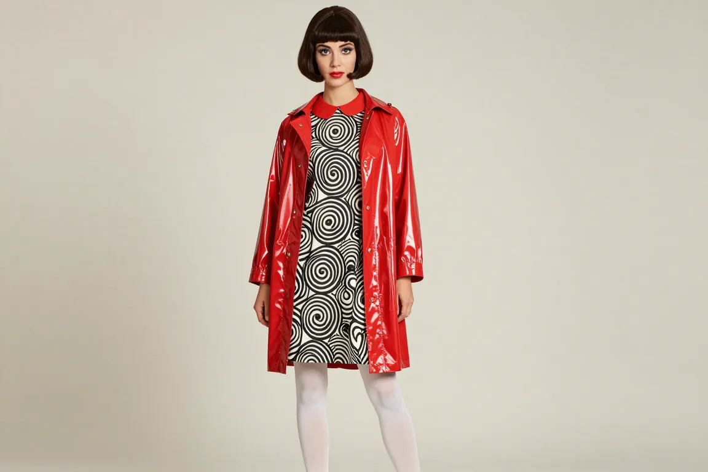

Mod and mini
fashion · 1960s · also: Swinging London dress, Miniskirt and shift, Mod fashion, Carnaby Street look
The young London look of the 1960s: the miniskirt, the short shift, a slim jacket and a bold print, sold by small boutiques.

Core thesis
Fashion belongs to the young and the street: a short hem, a clean cut and a bold print show speed and fun.
Design principles
- Raise the hem to 10 to 20 cm above the knee for a miniskirt.
- Cut the dress as a short, straight shift or an A-line, with the waist seam low or gone.
- Keep the line clean: no darts that show, no ruffle, no trim.
- Use bold shapes and op-art prints in black and white, or flat bright colours.
- Use tights in opaque wool or nylon, and a flat or low-heeled shoe.
- Cut the mod suit slim, with a short jacket, narrow lapels and a narrow trouser.
- Make the fashion in small runs, and sell it in a boutique that opens late and plays music.
Anti-patterns
- A hem at mid-calf
- A built waist and a full petticoat skirt
- Heavy, formal evening silk
- A fussy trim of lace and bows
- Pale, soft, sentimental pastels
- A long, stiff, buttoned jacket
Palette
Lineage
- Echoes
- Barbiecore, Pop Art, Pop Art (web)
- Evolved from
- English bespoke tailoring, Ivy style
- Evolved into
- Space Age couture
- Hybridises with
- Brutalist Jewellery, Glam platform shoe, Soft Natural Lingerie
- Provoked
- Hippie bohemian dress, Punk fashion
- Rebelled against
- New Look
Use it
SKILL.md · tokens.css · source JSON · open in the demo